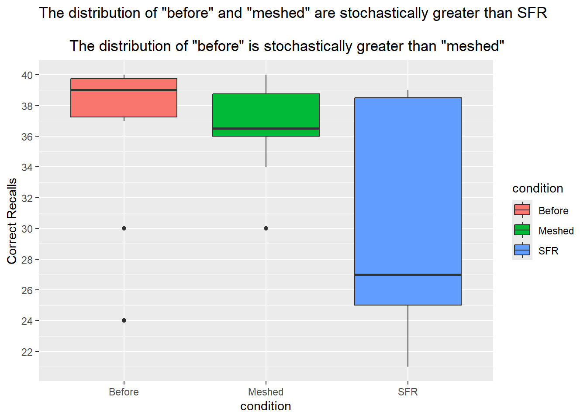

Recalling Words
Background
Many teachers and other educators are interested in understanding how to best deliver new content to students. In general, they have two choices of how to do this.
- The Meshed Approach
- Deliver new content while simultaneously reviewing previously understood content.
- The Before Approach
- Deliver new content after fully reviewing previously understood content.
A study was performed to determine whether the Meshed or Before approaches to delivering content had any positive benefits on memory recall.
Therefore, we aim to determine whether the Meshed or Before methods provide any positive benefit to memory recall. To test this, we will perform a Wilcoxon “Rank Sum (Mann–Whitney) test” to evaluate whether the distribution of scores in either method is stochastically greater than that of the control group (SFR). This allows us to assess whether correct recalls from the Meshed and Before groups tend to be significantly higher than those from the control group, indicating a potential benefit from new memorization techniques. As a bonus, we’ll test whether the Before group tends to outperform the Meshed group using another Wilcoxon Rank Sum (Mann–Whitney) test, making the assumption that its scores are generally higher, to find if a method is better than the the other. Which begs the questions:
Is the correctness of “before” and “meshed” stochastically greater than SFR?
And
Is correctness of “before” stochastically greater than “meshed”?
\[ H_0: \text{distribution of before and meshed are stochastically equal to SFR} \] \[ H_a: \text{distribution of before and meshed are stochastically greater than SFR} \]
\[ H_a: \text{distribution of before is stochastically equal to meshed} \] \[ H_a: \text{distribution of before is stochastically greater than meshed} \]
\[ \alpha = 0.05 \]
Experiment Details
Individuals were seated at a computer and shown a list of words. Words appeared on the screen one at a time, for two seconds each, until all words had been shown (40 total). After all words were shown, they were required to perform a few two-digit mathematical additions (like 15 + 25) for 15 seconds to avoid immediate memory recall of the words. They were then asked to write down as many of the 40 words as they could remember. They were given a maximum of 5.3 minutes to recall words.
The process of showing words and recalling words was repeated four times with the same list of words each time (four chances to get it right). The presentation of the first trial was the same for all treatment conditions. However, trials 2, 3, and 4 were slightly different for each treatment condition.
The SFR group (the control group) stands for Standard Free Recall. In all four trials the same list of 40 words was presented, in a random order each time.
The Before group also used the same 40 words during each trial. However, any words that were correctly recalled in a previous trial were presented first, or before the words that were not recalled in the last trial. After all the correct words were presented in random order, the non-recalled words were presented in a random order.
The Meshed group also used the same 40 words during each trial. However, words that were correctly recalled in a previous trial were alternated with a missed word during the next presentation order.
The data records the number of correctly recalled words (out of the 40 possible) from the fourth trial. Results were obtained for 30 students, 10 in each of the three treatment groups: SFR, Before, and Meshed.
Data
The results from the study can be found in the Friendly data set in R after loading library(car).
Click the “Code” button to see the data.
Analysis
As shown by the graph below, we compared the before and meshed groups relative to the control groups. It is visually clear that the before group has a higher median than the meshed group, implying that a higher percentage of the sample subjects of the before group have better recall than the meshed. But both before and meshed groups are substantially more effective than the control group(SFR) in obtaining higher scores, implying that memorization techniques do affect recall performance on subjects, than just memorizing randomly. Therefore, we must find statistical evidence if before and meshed have a significant difference in scores than SFR. Then find if the median of before is significantly more correct than meshed.

| Friendly$condition | min | Q1 | median | Q3 | max | mean | sd | n | missing |
|---|---|---|---|---|---|---|---|---|---|
| Before | 24 | 37.25 | 39 | 39.75 | 40 | 36.6 | 5.337 | 10 | 0 |
| Meshed | 30 | 36 | 36.5 | 38.75 | 40 | 36.6 | 3.026 | 10 | 0 |
| SFR | 21 | 25 | 27 | 38.5 | 39 | 30.3 | 7.334 | 10 | 0 |
After performing the test, an approximation had to be used since there were ties present in the data and also because the distributions aren’t similarly shaped for medians. Yielding a p-value of 0.01644, which is smaller than a 0.05 alpha, which rejects the null. Concluding, both groups(before and meshed) are stochastically greater in correctness than the control group
\[ H_0: \text{distribution of before and meshed are stochastically equal to SFR} \] \[ H_a: \text{distribution of before and meshed are stochastically greater than SFR} \]
| Test statistic | P value | Alternative hypothesis |
|---|---|---|
| 148.5 | 0.01644 * | greater |
Lastly, we approximate if before is stochastically greater than meshed since there are ties in present. The test outputs a p-value of 0.189, which is bigger than a 0.05, therefore we fail to reject the null, or conclude that the before is stochastically greater than meshed.
\[ H_a: \text{distribution of before is stochastically equal to meshed} \] \[ H_a: \text{distribution of before is stochastically greater than meshed} \]
| Test statistic | P value | Alternative hypothesis |
|---|---|---|
| 62 | 0.189 | greater |
Interpretation
Both methods, before and meshed benefit the results on memory recall relative to SFR. with both “before” and “meshed” having a higher distribution/median scores of (39 & 36.5) than SFR’s (27) resulting in stochastically greater results. However, among before and meshed, there isn’t a method that is significantly better, therefore leading to the conclusion that either one is has any positive benefit on memory recall.
Key takeaways from this research would be to organize the document, in a way that perfoming multiple A/B testing doesn’t confuse the reader. As well that joining groups can help create more scenarios in which we can extract value from the data.